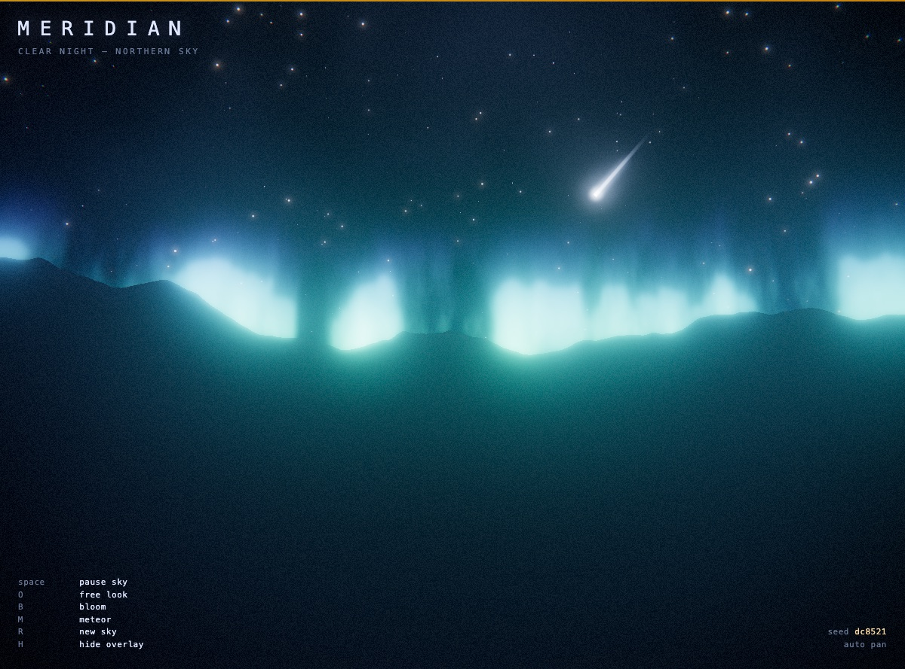
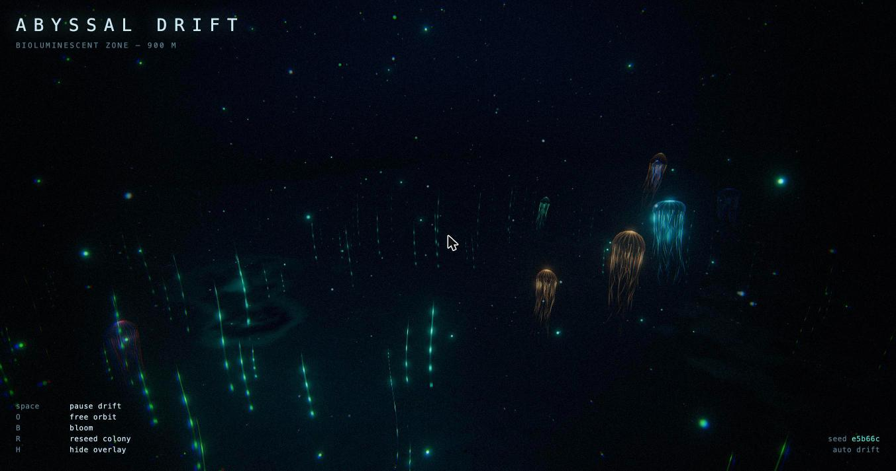
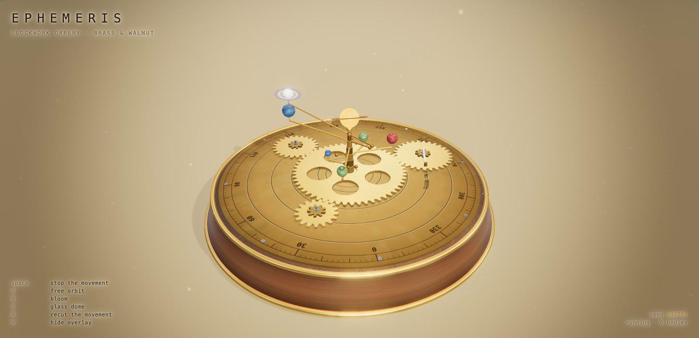

Three.js · WebGL · Generative
Awesome AI Visualizations
A small gallery of self-contained, procedurally generated Three.js scenes. Each runs entirely in the browser — no build step, no server. Pick one and let it drift.

Meridian
A wheeling night sky — a starfield turning slowly around the celestial pole above a silhouetted ridge, with the Milky Way, a phased moon, aurora curtains on the horizon, and the odd meteor.

Abyssal Drift
A bioluminescent deep-sea scene — a colony of pulsing jellyfish drifting through a dark water column over a glowing seafloor, with a slow camera dolly on a closed path.

Ephemeris
A clockwork orrery — a brass-and-walnut planetary machine on an engraved dial plate, driven by a sun-and-planet gear train whose wheels are meshed and phased by arithmetic, under a glass vitrine you can lower.